Thanh điều hướng mới
Biển vải đen (B) đã chọn, bốn icon bên phải lên 20 × 20. Còn một việc: cỡ logo. Ảnh chụp từ trang thật đang chạy; bộ ảnh từ mục "Trang chủ" trở xuống dùng cỡ đề xuất.
Cỡ chữ HIVE
Chữ HIVE giờ không gõ bằng font nữa mà là hình vector trong logo, nên nó không có font-size. Nó cao 16,6 px trên desktop (bằng Big Shoulders Stencil cỡ 20,8 px) và 15,6 px trên điện thoại. Chữ HIVE cũ (Unbounded cỡ 16 px) chỉ cao 12 px, nhưng rộng và đậm gấp đôi nên trông to hơn.
Máy tính
đề xuất
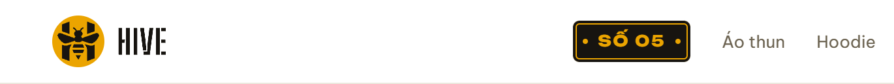
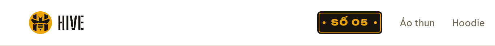
Điện thoại
Điện thoại ít chỗ hơn nhiều: ở màn 360 px, logo cao 34 px đã lấn vào lề phải của thanh. Vì vậy logo trên điện thoại dừng ở 32 px.
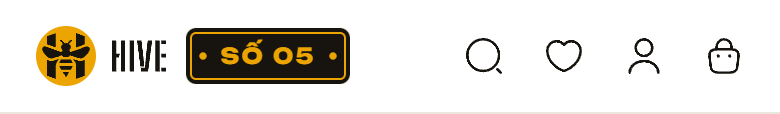
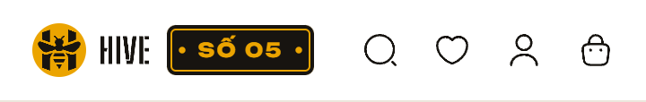
đề xuất
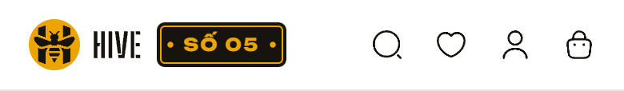
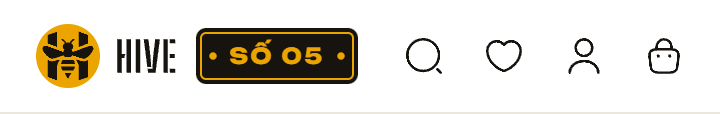
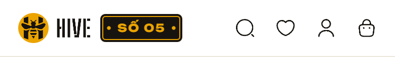
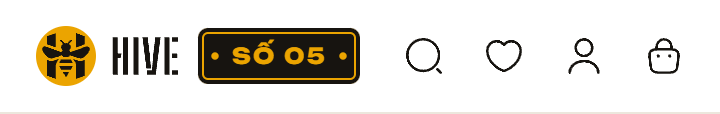
Icon 20 × 20
Hộp icon chung của hệ là 18 px; riêng bốn nút trên thanh lên 20 px. Nút vẫn giữ nguyên kích thước bấm (44 px trên desktop, 40 × 44 px trên điện thoại). Bong bóng số dời ra ngoài 1 px để vẫn che đúng góc icon như cũ.
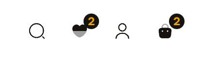
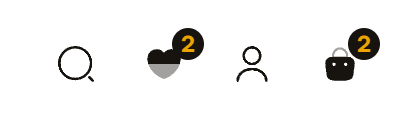
Trang chủ, máy tính 1280 px
Tấm biển ở từng trạng thái
Trạng thái nằm ở màu biển: chữ mật ong khi đang bán, biển xanh khi Số chưa mở, chữ xám khi đã đóng. Khi làm thật, link mang thêm tên trạng thái cho trình đọc màn hình, ví dụ "Số 06, sắp mở".
| Đang bántrạng thái thường | 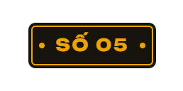 |
|---|---|
| Sắp mởchưa có Số nào đang bán | 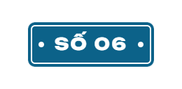 |
| Đã đónggiữa hai Số | 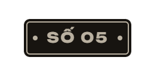 |
| Đang xem cả Sốgạch mật ong như danh mục đang chọn | 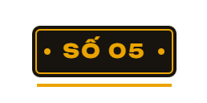 |
| Rê chuột | |
| Tab tớivòng focus của hệ |
Đang chọn một danh mục
Danh mục giữ nguyên cách báo đang chọn: chữ đậm và gạch mật ong.
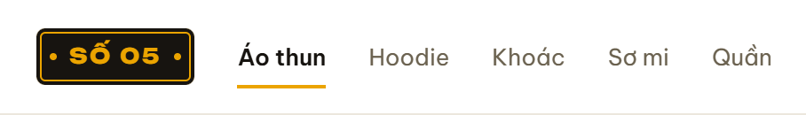
Điện thoại
Bố cục giữ nguyên: logo · biển · bốn nút; không có danh mục như trước.
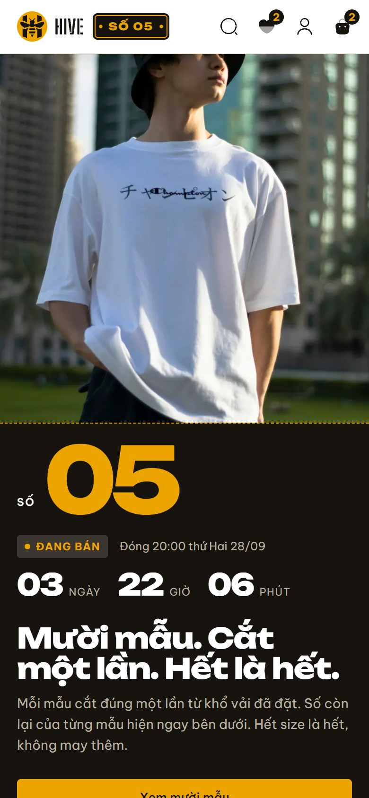
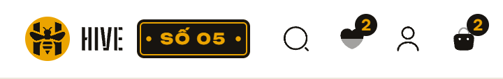
Khổ màn khác
Khi làm thật
- Thứ tự trong thanh: logo · biển · danh mục · bốn nút, cả trong mã, để phím Tab đi đúng thứ tự mắt nhìn.
- Biển là link như tem cũ: Số đang bán mở danh sách mẫu, Số đã đóng mở trang lưu của Số. Biển nhận gạch "đang xem cả Số" mà link "Số 05" từng mang.
- Bỏ đồng hồ khỏi thanh, kèm bộ đếm chạy mỗi giây. Đồng hồ lớn trên bìa trang chủ giữ nguyên.
- Logo vẽ bằng SVG ngay trong trang, lấy từ
prototype/name/logo/hive-lockup.svg, theo cỡ bạn chọn ở trên. - CSS theo đúng bản đã chụp:
prototype/name/nav/proposal.css(biển B, icon 20 px, desktop dùng lưới bốn cột để cụm giữa nằm giữa thanh). - Ngoài phạm vi: chân trang, thanh bên quản trị và phiếu giao hàng vẫn dùng chữ HIVE cũ; làm ở lượt sau nếu bạn muốn.
Đề xuất: logo 40 px trên desktop, 32 px trên điện thoại. Chữ HIVE trên desktop cao 20,8 px, to hơn bản hiện tại 25%, và logo giữ đúng tỉ lệ chuẩn. Trên điện thoại, 32 px là cỡ lớn nhất còn vừa màn 360 px.